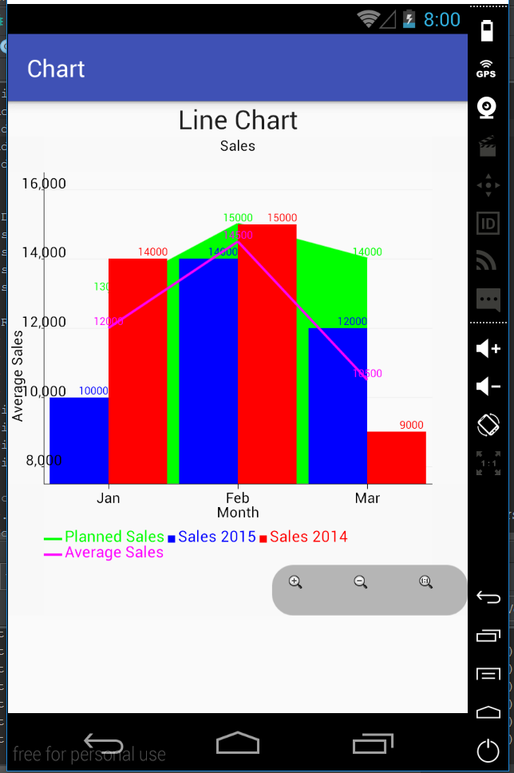

In this section, we will see how to include different types of charts to the same X and Y axes. These types of charts are called combined. We will create a combined chart that consists of a line chart, an area chart and a bar chart. We should get the following result: 
Create a new activity that will display the combined chart. For that, create two new files: activity_combined.xml and CombinedActivity.java. Include the new activity into the AndroidManifest.xml file:
<activity android:name=".CombinedActivity" />The activity_combined.xml is the same as for the line chart.
The CombinedActivity.java will have the following code:
public class CombinedActivity extends AppCompatActivity {
@Override
protected void onCreate(Bundle savedInstanceState) {
super.onCreate(savedInstanceState);
setContentView(R.layout.activity_combined);
int month[] = {0, 1, 2};
int carSale[] = {10000, 14000, 12000};
int carSale2014[]= {14000, 15000, 9000};
int average[] = {12000, 14500, 10500};
int planned[] = {13000, 15000, 14000};
XYSeries series = new XYSeries("Sales 2015");
XYSeries series2014 = new XYSeries("Sales 2014");
XYSeries seriesAvg = new XYSeries("Average Sales");
XYSeries seriesPlanned = new XYSeries("Planned Sales");
for (int i = 0; i < month.length; i++) {
series.add(month[i], carSale[i]);
series2014.add(month[i], carSale2014[i]);
seriesAvg.add(month[i], average[i]);
seriesPlanned.add(month[i], planned[i]);
}
XYMultipleSeriesDataset dataset = new XYMultipleSeriesDataset();
dataset.addSeries(seriesPlanned);
dataset.addSeries(series);
dataset.addSeries(series2014);
dataset.addSeries(seriesAvg);
XYMultipleSeriesRenderer mRenderer = new XYMultipleSeriesRenderer();
XYSeriesRenderer renderer = new XYSeriesRenderer();
XYSeriesRenderer renderer2014 = new XYSeriesRenderer();
XYSeriesRenderer rendererAvg = new XYSeriesRenderer();
XYSeriesRenderer rendererPlanned = new XYSeriesRenderer();
mRenderer.addSeriesRenderer(rendererPlanned);
mRenderer.addSeriesRenderer(renderer);
mRenderer.addSeriesRenderer(renderer2014);
mRenderer.addSeriesRenderer(rendererAvg);
//make the area chart from the line chart
XYSeriesRenderer.FillOutsideLine fillY = new XYSeriesRenderer.FillOutsideLine(XYSeriesRenderer.FillOutsideLine.Type.BOUNDS_ALL);
fillY.setColor(Color.GREEN);
rendererPlanned.addFillOutsideLine(fillY);
//display values on lines
renderer.setDisplayChartValues(true);
renderer2014.setDisplayChartValues(true);
rendererAvg.setDisplayChartValues(true);
rendererPlanned.setDisplayChartValues(true);
//set the size of values
renderer.setChartValuesTextSize(18);
renderer2014.setChartValuesTextSize(18);
rendererAvg.setChartValuesTextSize(18);
rendererPlanned.setChartValuesTextSize(18);
//give the title for the chart
mRenderer.setChartTitle("Sales");
//set the size of the chart title
mRenderer.setChartTitleTextSize((float) 24.0);
//set margins and define their color as transparent
int[] margins = {60, 60, 60, 60};
mRenderer.setMargins(margins);
mRenderer.setMarginsColor(Color.argb(0x01, 0x01, 0x01, 0x01));
//set titles for axes, their size and color
mRenderer.setXTitle("Month");
mRenderer.setYTitle("Average Sales");
mRenderer.setAxisTitleTextSize((float) 24.0);
//set the size and the color of labels
mRenderer.setLabelsColor(Color.BLACK);
mRenderer.setLabelsTextSize((float)24.0);
//set the background color of the chart
mRenderer.setApplyBackgroundColor(true);
mRenderer.setBackgroundColor(Color.TRANSPARENT);
//show grid
mRenderer.setShowGrid(true);
//show values of the chart
mRenderer.setDisplayValues(true);
//create the array of strings for the X axis labels
String[] m = new String[] {
"Jan", "Feb" , "Mar"
};
//add text of labels to the X axis
for(int i=0; i< month.length;i++){
mRenderer.addXTextLabel(i, m[i]);
}
//hide the labels that only their text will be shown
mRenderer.setXLabels(0);
//set color of labels and axes
mRenderer.setXLabelsColor(Color.BLACK);
mRenderer.setYLabelsColor(0, Color.BLACK);
mRenderer.setXAxisColor(Color.BLACK);
mRenderer.setYAxisColor(Color.BLACK);
//set the text size of the legend
mRenderer.setLegendTextSize((float)26.0);
//set zoom to be visible
mRenderer.setZoomButtonsVisible(true);
//set the width of the lines
rendererAvg.setLineWidth(4);
rendererPlanned.setLineWidth(4);
//set spaces between bars
mRenderer.setBarSpacing(0.1);
//set bar width
mRenderer.setBarWidth(100);
//set colors
renderer.setColor(Color.BLUE);
renderer2014.setColor(Color.RED);
rendererAvg.setColor(Color.MAGENTA);
rendererPlanned.setColor(Color.GREEN);
//specify which types the combined chart will include
CombinedXYChart.XYCombinedChartDef[] types = new CombinedXYChart.XYCombinedChartDef[] {
new CombinedXYChart.XYCombinedChartDef(BarChart.TYPE, 1, 2),
new CombinedXYChart.XYCombinedChartDef(LineChart.TYPE, 3),
new CombinedXYChart.XYCombinedChartDef(LineChart.TYPE, 0)
};
LinearLayout chartContainer = (LinearLayout) findViewById(R.id.combined_chart_container);
chartContainer.removeAllViews();
GraphicalView chart = ChartFactory.getCombinedXYChartView(CombinedActivity.this, dataset, mRenderer, types);
chartContainer.addView(chart);
}
}We create an area chart, a bar chart and a line chart in the same way as we have created them in previous sections. We just add all series to the same dataset and all XY renderers to the same multiple renderer. It should be mentioned that the order in which XY renderers are included in a multiple renderer are important. It is the order in which the charts will be displayed. Specifically, we want the area chart to be hidden behind the others. We will first include the area chart renderer to the multiple renderer. The line chart should be in front. Then, as the last step we include the line chart renderer to the multiple renderer.
For combined charts, we need to specifiy what types of charts it will include:
CombinedXYChart.XYCombinedChartDef[] types = new CombinedXYChart.XYCombinedChartDef[] {
new CombinedXYChart.XYCombinedChartDef(BarChart.TYPE, 1, 2),
new CombinedXYChart.XYCombinedChartDef(LineChart.TYPE, 3),
new CombinedXYChart.XYCombinedChartDef(LineChart.TYPE, 0)
};For each chart, we define a chart type and a corresponding data series index.
For this guide, we use the version 1.2.0 of the library. In this version, the types of charts are specified as CombinedXYChart.XYCombinedChartDef[]. However, in Javadoc you can see that the constructor for a combined chart accepts an array of strings that specifies types CombinedXYChart(XYMultipleSeriesDataset dataset, XYMultipleSeriesRenderer renderer, java.lang.String[] types).
Finally, we locate by id the linear layout we have created as a container for a combined chart LinearLayout chartContainer = (LinearLayout) findViewById(R.id.combined_chart_container);. We create the view that encapsulates the combined chart GraphicalView chart = ChartFactory.getCombinedXYChartView(CombinedActivity.this, dataset, mRenderer, types); and add it to the linear layout chartContainer.addView(chart);.
In this guide, we have seen how to create 7 types of charts using the AChartEngine library. We also have seen how you can customize these charts. Using the library it also possible to create other types of charts such as time, doughnut, and dial chart.